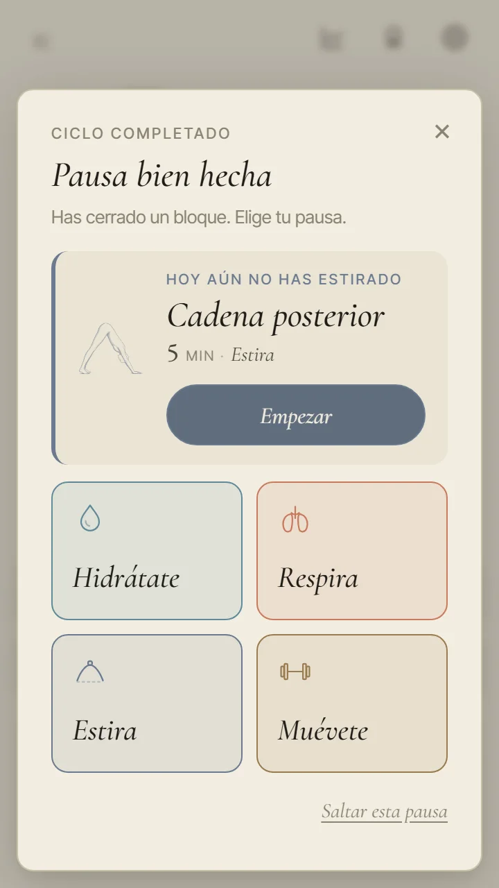
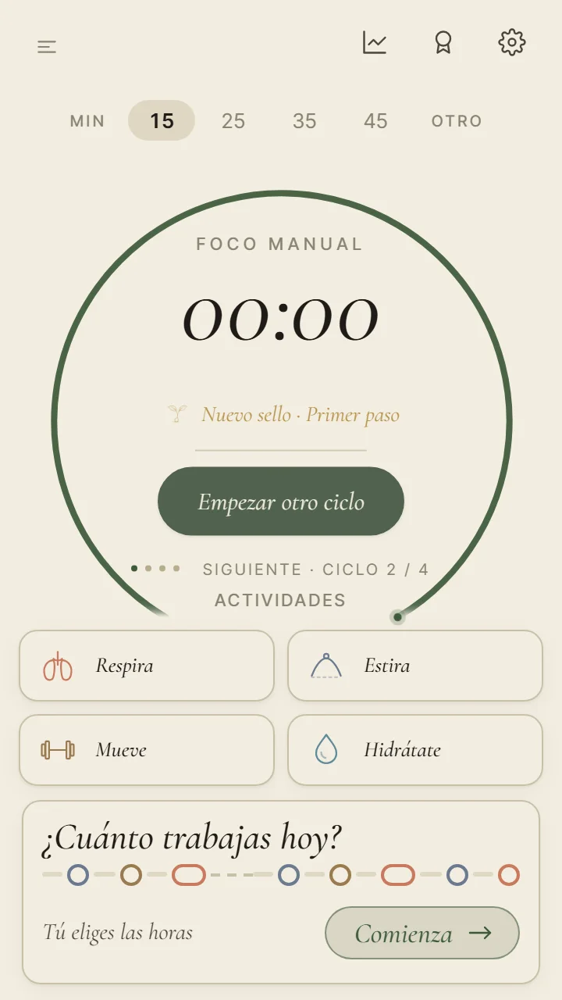

PACE · la pausa · para Ez · 9 de octubre
La pausa, ya montada
Esta vez no es una maqueta: son fotos de la app con la opción A que elegiste, el texto nuevo, «Ir a comer» y el sello que espera. Antes de subirla falta tu sí.
Una diferencia con las fotos del otro día: allí los botones salían en serif recta por un fallo de la maqueta. La página decía «en serif itálica, como Empezar foco», y así van ahora. Si los prefieres rectos, se cambia en un momento.
Pausa
En inglés, la corta: móvil y portátil. Toca una foto para verla en grande.
La regla del alto
No crece en ningún caso
Alto de la ventana en un móvil de 360 × 640, en px. Ninguna tiene que desplazarse por dentro.
| Pausa | Antes | Ahora |
|---|
| Corta | 484 | 457 |
| Larga | 518 | 491 |
| Comida | 431 | 396 |
| Sin «A tu ritmo» | 601 | 564 |
El sello
Ya no tapa ninguna ventana
Con el primer Pomodoro, el aviso «Nuevo sello» salía encima de la pausa y tapaba «Saltar esta pausa». Ahora espera mientras haya algo abierto (la pausa, Hidrátate, una rutina) y sale al volver a la home. El sello se gana igual en el momento.

Con la pausa abierta
el aviso espera

Al saltar la pausa
sale en la home
Lo que no he podido cumplir del todo: en la home del móvil no queda ningún hueco libre (todo el alto está ocupado para que no haya scroll), así que el aviso sigue saliendo abajo durante 3 segundos, encima del final de la tarjeta del día. No bloquea nada: los toques pasan a lo que hay debajo. En el portátil pasa lo mismo con la línea del día: ver foto.
Lo que tienes que decir
Dos preguntas
- ¿Subimos la pausa así?Si quieres cambiar algo (los botones rectos, un texto…), dímelo.
- El sello en la home: ¿vale así por ahora?Recomiendo que sí, y que el sitio propio del sello en la home se decida con la barra lateral nueva, que tiene su propia sesión. Una opción es que no salga ningún aviso encima y el sello aparezca en «Último logro», con su sonido.